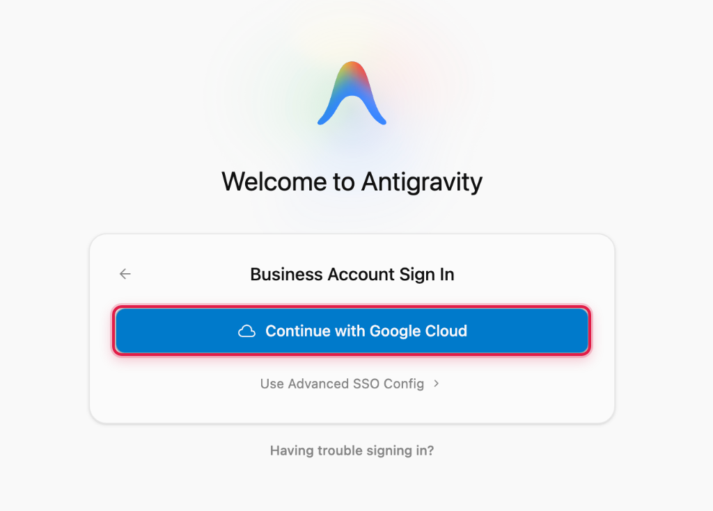
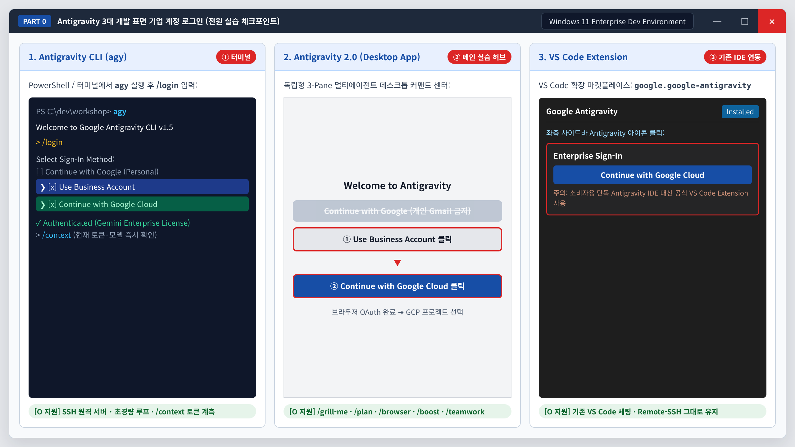
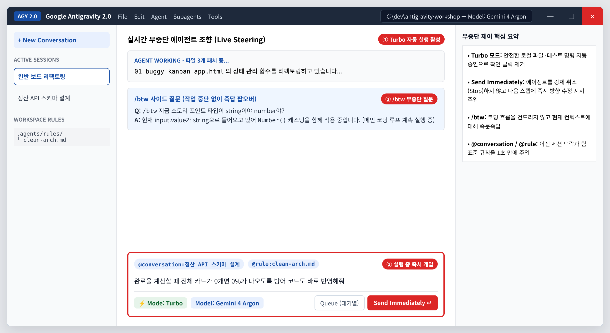
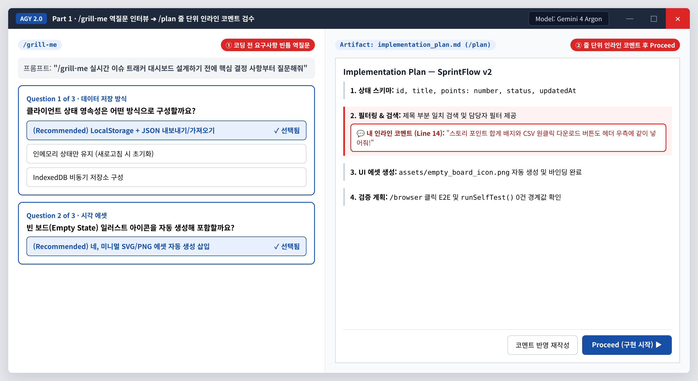
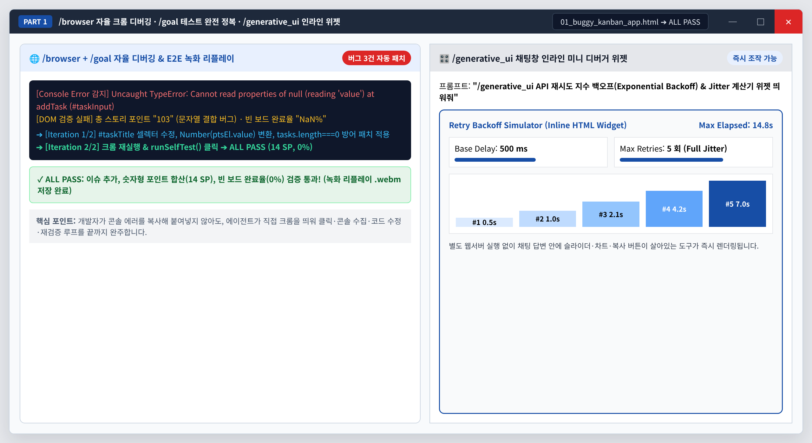
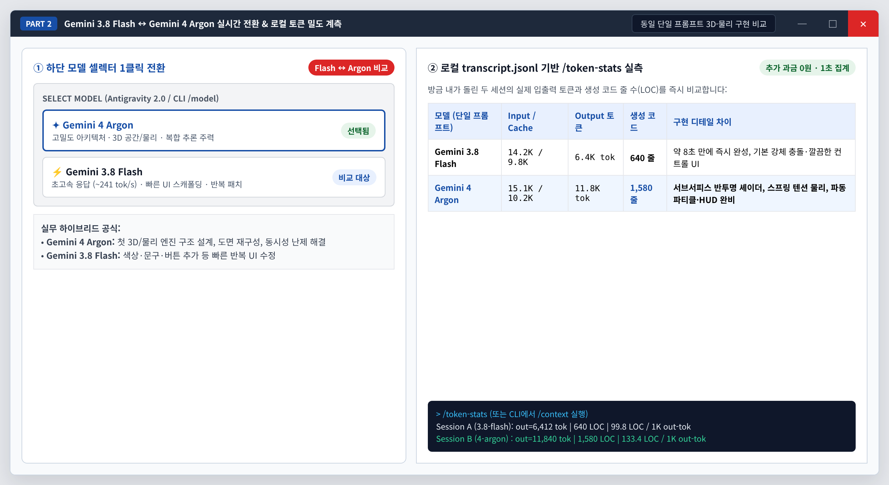
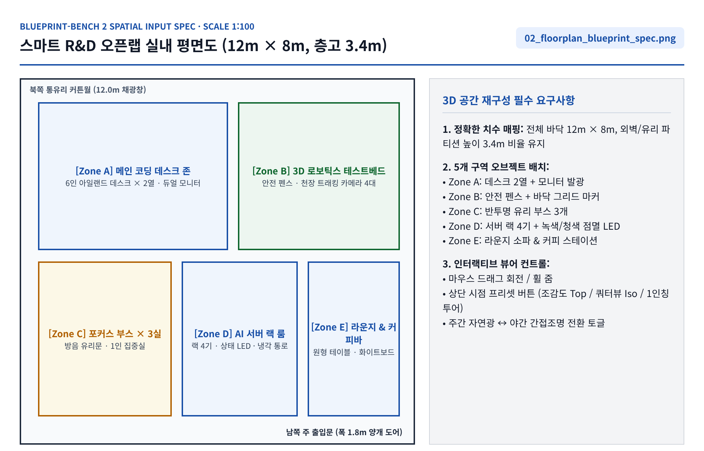
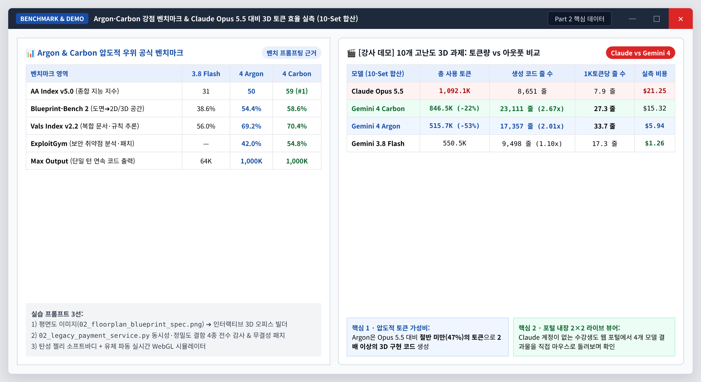
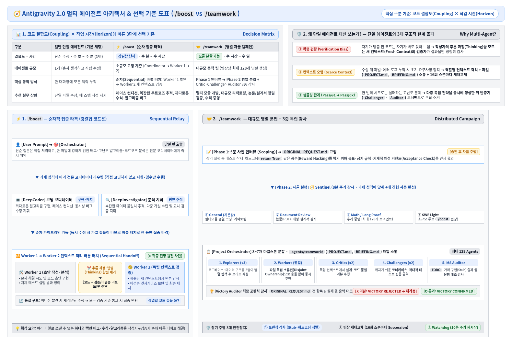
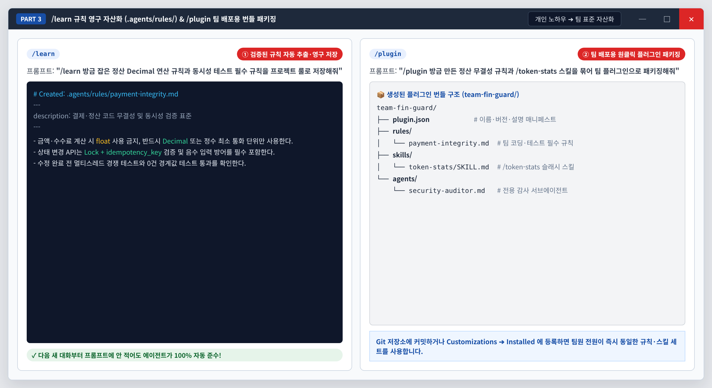

Gemini 4 Argon 강점 체험 & Antigravity 편의 기능 실습
기업 계정 로그인부터 설계 인터뷰, 크롬 자율 E2E 디버깅, 단일 프롬프트 3D·벤치마크 비교, 그리고 멀티에이전트 분업과 팀 플러그인 자산화까지 전 과정을 직접 손으로 완주합니다.
| 세션 | 기본(90분) / 확장(180분) | 핵심 실습 주제 | 사용 파일 / 기능 |
|---|---|---|---|
| Part 0. 환경 세팅 & 제어 | 10분 / 20분 | 기업 계정 로그인 필수 완주 (CLI · AGY 2.0 · VS Code Extension) + 무중단 조향 | agy, Turbo, Send Immediately, /btw |
| Part 1. 설계 ~ 자율 디버깅 | 30분 / 55분 | 역질문 인터뷰 ➔ 플랜 줄 단위 코멘트 ➔ 크롬 E2E 자동 패치 ➔ 인라인 위젯 | 01_buggy_kanban_app.html, /grill-me, /plan, /browser, /goal, /generative_ui |
| Part 2. 모델 & 3D 생성 비교 | 30분 / 60분 | 3.8 Flash ↔ 4 Argon 전환 · 벤치마크 프롬프팅 · [데모] Claude vs Carbon/Argon 토큰 밀도 | 02_floorplan_blueprint_spec.png, 02_legacy_payment_service.py, 03_token_stats_SKILL.md |
| Part 3. 멀티에이전트 & 자산화 | 20분 / 45분 | Worker 1➔2 교차 검증 · 파일 독점 병렬 구현 · 규칙 영구 저장 & 플러그인 패키징 | 04_clean_arch_rule.md, /boost, /teamwork, /learn, /plugin |
실습 0-1. 기업 계정 로그인 완주 (CLI · Antigravity 2.0 · VS Code Extension)
수강생 전원이 기업 라이선스 인증 경로(Use Business Account ➔ Continue with Google Cloud)로 로그인까지 반드시 완료합니다.
1단계: Antigravity 2.0 데스크톱 앱 기업 계정 로그인[필수 체크포인트] 개인 Gmail 로그인 금지
- 1️⃣ 첫 화면에서 파란색 개인용 버튼 대신 아래 회색 Use Business Account 버튼을 클릭합니다.
- 2️⃣ 이어서 나오는 화면에서 파란색 Continue with Google Cloud 버튼을 클릭하고 사내 Google Cloud 계정을 인증합니다.
- 3️⃣ GCP 프로젝트 선택 창이 표시되면 안내받은 실습 프로젝트 ID를 선택해 메인 워크스페이스로 진입합니다.

① 회색 Use Business Account 클릭

② 파란색 Continue with Google Cloud 클릭
2단계: Antigravity CLI & VS Code Extension 동일 인증 확인[O 지원] 동일 기업 쿼터 공유
- 1️⃣ Antigravity CLI (터미널): PowerShell 또는 터미널에서
agy실행 ➔/login입력 ➔ Use Business Account ➔ Continue with Google Cloud 선택 후/context로 활성 모델·토큰 상태를 확인합니다. - 2️⃣ VS Code Extension: VS Code 확장 탭에서
Google Antigravity(google.google-antigravity) 설치 ➔ 좌측 아이콘 클릭 ➔ Continue with Google Cloud로 로그인합니다. (소비자용 단독 Antigravity IDE 대신 공식 Extension을 사용합니다.)

3단계: 에이전트를 멈추지 않는 무중단 제어 (Turbo · Send Immediately · /btw)[O 지원] 실시간 조향
- 1️⃣ 하단 실행 모드를 Turbo로 전환해 반복적인 파일·터미널 승인 클릭을 제거합니다.
- 2️⃣ 에이전트가 코딩 중일 때
/btw로 작업 중단 없이 궁금한 점을 즉시 물어보고, 요구사항 추가 시 Stop 대신 Send Immediately로 실시간 반영합니다. - 3️⃣
@conversation과@rule칩으로 이전 세션 맥락과 팀 표준 규칙을 1초 만에 불러옵니다.
/btw Tab ⇥
지금 열려 있는 워크스페이스 파일 목록과 현재 선택된 모델 이름만 한 줄로 알려줘

실습 1-1. /grill-me 역질문 인터뷰 & /plan 줄 단위 인라인 코멘트
모호한 프롬프트로 바로 코딩에 들어가지 않고, 에이전트의 객관식 역질문과 기획서 인라인 첨삭으로 첫 구현 정확도를 극대화합니다.
1단계: /grill-me 로 코딩 전 요구사항 빈틈 확정[O 지원] 객관식 카드
- 1️⃣ 채팅창에
/grill-me칩을 선택하고 아래 프롬프트를 입력합니다. - 2️⃣ 객관식 질문 카드가 뜨면 (Recommended) 옵션을 클릭해 기술 스택과 예외 정책을 확정합니다.
/grill-me Tab ⇥
팀 스프린트 칸반 보드 웹앱을 만들기 전에 저장 방식과 필터 조건 등 핵심 결정 사항부터 질문해줘
2단계: /plan 줄 단위 인라인 코멘트 & 이미지 에셋 삽입[O 지원] 코드 리뷰식 기획 첨삭
- 1️⃣
/plan으로 생성된 우측implementation_plan.md특정 줄에 마우스를 올려 인라인 코멘트를 추가합니다. - 2️⃣ 빈 화면 아이콘 등 시각 에셋 생성까지 함께 지시한 뒤 우측 상단 Proceed 버튼을 클릭합니다.
/plan Tab ⇥
방금 합의한 조건에 빈 보드 일러스트 아이콘 자동 생성까지 포함해서 구현 계획서를 작성해줘

3단계: /browser + /goal 크롬 자율 조작·콘솔 에러 패치 루프[O 지원] E2E 녹화 리플레이
- 1️⃣ 실습 폴더의
01_buggy_kanban_app.html에는 셀렉터 오타(TypeError), 문자열 포인트 합산("103"), 빈 보드NaN%버그 3건이 숨어 있습니다. - 2️⃣
/browser와/goal을 조합해 에이전트가 직접 크롬을 띄워 버튼을 눌러보고 자가 테스트 실행이 초록색ALL PASS가 될 때까지 스스로 고치게 합니다.
/goal Tab ⇥
/browser Tab ⇥
@01_buggy_kanban_app.html
크롬으로 이 파일을 직접 열어서 이슈 추가와 자가 테스트 버튼을 클릭해보고 콘솔 에러 없이 ALL PASS가 뜰 때까지 모든 버그를 찾아 수정해줘
4단계: /generative_ui 채팅창 인라인 개발 도구 위젯[O 지원] 무설치 인터랙티브 UI
- 1️⃣ 별도 로컬 서버 실행 없이 채팅 응답 안에 즉시 슬라이더·실시간 차트가 작동하는 개발 계산기를 띄워봅니다.
/generative_ui Tab ⇥
API 재시도 지수 백오프와 Jitter 지연을 슬라이더로 조절하며 비교하는 인터랙티브 시뮬레이터 위젯을 바로 띄워줘

🔥 [3시간 과정용 심화 미션] 브라우저 조작 녹화 리플레이 & 다크모드 회귀 검증
칸반 보드에 드래그 앤 드롭 카드 이동과 다크모드 토글을 추가한 뒤,
/browser가 전체 시나리오를 다시 클릭 검증해 리플레이 아티팩트 영상을 남기도록 실행해보세요.
실습 2-1. Gemini 3.8 Flash ↔ Gemini 4 Argon 전환 & 3D 물리 비교
동일한 단일 프롬프트를 Gemini 3.8 Flash(초고속 응답)와 Gemini 4 Argon(고밀도 공간·물리 추론)으로 각각 실행해 셰이더·물리 디테일과 로컬 토큰 효율을 직접 비교합니다.
1단계: 동일 3D·물리 프롬프트로 Flash vs Argon 맞대결모델 셀렉터 전환
- 1️⃣ 새 대화를 열고 모델을 Gemini 3.8 Flash로 선택한 뒤 아래 프롬프트로
jelly_flash.html을 생성합니다. - 2️⃣ 두 번째 새 대화에서 모델을 Gemini 4 Argon으로 전환하고 같은 프롬프트로
jelly_argon.html을 생성해 브라우저에서 나란히 비교합니다. - 3️⃣ 실습 파일의
03_token_stats_SKILL.md를.agents/skills/token-stats/SKILL.md로 넣거나 CLI에서/context를 실행해 두 세션의 실제 토큰과 코드 줄 수를 확인합니다.
Model: Gemini 3.8 Flash ↔ Gemini 4 Argon
단일 HTML 파일로 마우스로 찌르면 탱글탱글하게 출렁이고 광원 굴절과 그림자가 살아있는 3D 반투명 젤리 로봇 시뮬레이터를 만들어줘

2단계: Argon & Carbon 강점 벤치마크 태스크 직접 돌려보기Blueprint · Vals · ExploitGym
- 1️⃣ 공간·도면 재구성 (Blueprint-Bench 2 강점): 첨부된 평면도 이미지(
02_floorplan_blueprint_spec.png)를 넣고 시점 전환·조명 토글이 되는 3D 오피스 공간으로 즉시 변환합니다. - 2️⃣ 복합 트랜잭션·보안 취약점 감사 (Vals & ExploitGym 강점):
02_legacy_payment_service.py에 숨겨진 멀티스레드 TOCTOU 레이스 컨디션, 부동소수점 오차, 초과 환불, 멱등성 누락 4가지를 한 번에 잡아냅니다.
Model: Gemini 4 Argon
@02_floorplan_blueprint_spec.png
첨부한 평면도 치수와 5개 구역 사양을 그대로 반영해서 조감도·1인칭 시점 전환과 주야간 조명 토글이 작동하는 인터랙티브 3D 공간 뷰어를 단일 HTML로 구현해줘
Model: Gemini 4 Argon
@02_legacy_payment_service.py
이 정산 코드의 동시성 경쟁과 금액 정밀도, 부분 환불 취약점을 모두 찾아 패치하고 멀티스레드 재현 테스트로 잔액 무결성을 증명해줘

실습 입력 도면: 02_floorplan_blueprint_spec.png

Argon·Carbon 공식 벤치마크 및 10-Set 3D 토큰 효율 실측
3단계: [데모 & 라이브 체험] Claude Opus 5.5 vs Gemini 4 Carbon · Argon · 3.8 Flash 토큰 대비 아웃풋[강사 데모 + 직접 조작]
- 1️⃣ 동일한 10개 고난도 Pure-3D 과제를 수행했을 때 Claude Opus 5.5(
1,092.1K tok/8,651줄/$21.25) 대비 Gemini 4 Carbon(846.5K tok/23,111줄)은 22% 적은 토큰으로 2.67배 코드 밀도, Gemini 4 Argon(515.7K tok/17,357줄/$5.94)은 절반 미만의 토큰으로 2.01배 코드 밀도를 기록했습니다. - 2️⃣ 아래 내장된 실시간 2×2 WebGL 뷰어에서 좌측 10개 세트를 클릭하며 4개 모델의 실제 3D 결과물과 토큰·비용 지표를 직접 회전·비교해보세요.
실습 3-1. /boost 순차 교차 검증 & /teamwork 파일 독점 병렬 구현
단일 에이전트의 확증 편향과 컨텍스트 오염을 깨기 위해, 과제 결합도에 맞춰 /boost(Worker 1➔2 새 컨텍스트 감사)와 /teamwork(파일 독점 병렬 구현 + 3중 감사)를 구분해 가동합니다.

1단계: /boost — Worker 1 초안 ➔ 추론 폐기 ➔ Worker 2 새 컨텍스트 검증 루프강결합 난제 타격
- 1️⃣
/boost를 실행하고 우측 Subagents 패널을 열어Coordinator➔Worker 1➔Worker 2로 바통이 넘어가는 과정을 실시간 관찰합니다. - 2️⃣
Worker 1의 내부 변명(Thinking)이 폐기되고 순수 코드만 받은Worker 2가 어떤 숨은 코너케이스(예: 음수 환불 입력 등)를 새로 잡아내는지 확인합니다.
/boost Tab ⇥
@02_legacy_payment_service.py
정산 엔진의 동시 출금과 부분 환불 코너케이스를 Worker 1 초안 구현 후 Worker 2 새 컨텍스트 교차 검증으로 완벽히 패치해줘
2단계: /teamwork — 파일 독점 소유권 병렬 구현 & Subagent 실시간 지시멀티모듈 자율 분업
- 1️⃣ 여러 파일을 동시에 구축할 때는
/teamwork로 5분 인터뷰(ORIGINAL_REQUEST.md고정) 후 각 Worker가 서로 다른 파일을 독점 소유해 충돌 없이 병렬 구현하게 합니다. - 2️⃣ 우측 Subagents 패널에서 작업 중인 개별 Worker를 클릭해 직접 추가 지시(Direct Steering)를 보낼 수 있습니다.
/teamwork Tab ⇥
정산 백엔드 모듈, 실시간 정산 현황 HTML 대시보드, 동시성 검증 테스트 스위트 3개 파일을 각각 전담 워커로 나눠 병렬 구축하고 최종 감사까지 완료해줘

3단계: [실습] /learn 규칙 영구 저장 & /plugin 팀 배포용 패키징팀 표준 자산화
- 1️⃣
/learn으로 오늘 검증한 금액Decimal연산·동시성 테스트 규칙을.agents/rules/아래 마크다운 파일로 영구 저장합니다. - 2️⃣
/plugin으로 방금 만든 룰과/token-stats스킬을 하나의 팀 플러그인 폴더(plugin.json포함)로 깔끔하게 패키징합니다.
/learn Tab ⇥
방금 검증한 금액 Decimal 사용 필수 규칙과 동시성·0건 경계값 테스트 규칙을 프로젝트 영구 룰로 저장해줘
/plugin Tab ⇥
저장된 정산 무결성 룰과 token-stats 스킬을 묶어서 팀원들에게 바로 배포할 수 있는 플러그인 번들로 패키징해줘
